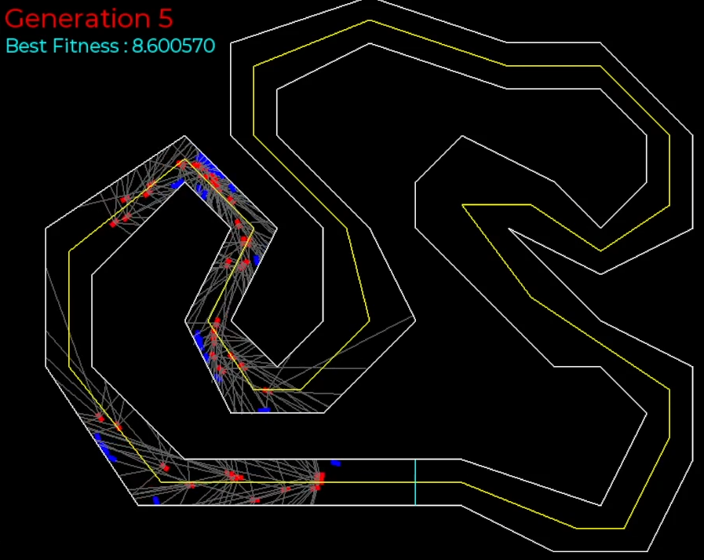
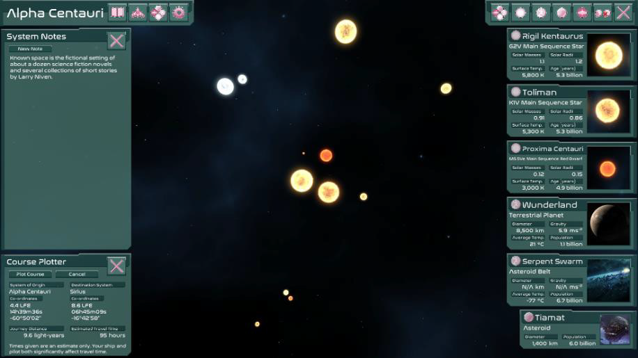

Stephen Jones
I'm an experienced games programmer, specialising in C# and the Unity engine.
Junior Programmer for 2 years
Second Impact Games
Part of the team behind Super Crazy Rhythm Castle
MSc Computer Games Technology, Distinction
Abertay University
Won the Andrew De Vries Memorial Prize for outstanding performance
BA Mathematics, 2.2
St John's College, University of Cambridge
stephenaidanjones@gmail.com
Portfolio
Super Crazy Rhythm Castle (2022-2023)
At Second Impact Games I worked mainly on Super Crazy Rhythm Castle, the chaotic musical adventure (released November 2023). As a member of a very small studio I got to work on many different parts of the game, including as the primary programmer for
- Network code on PS4 and PS5
- Gameplay programming in levels The Vault, The Thief Prince and The Game Garage
- The localisation system, including handling of non-Latin fonts and audit tools
- Steam achievements and stats
- Displaying appropriate gamepad and keyboard prompts for user input on all platforms
The game was programmed in C# using the Unity Engine.
Cave (2021)

A low-poly cave model is procedurally generated using a cellular automaton and marching cubes. Post-processing shaders apply a bloom effect and volumetric lighting to evoke bright sunlight streaming in. Programmed in C++, rendered using DirectX 11.
NEAT Cars (2020)
Cars are driven around a racetrack by an artificial neural network. These drivers are optimised using the Neuroevolution of Augmenting Topologies (NEAT) algorithm. Programmed in C++, using the SFML library for graphics.
Immortal (2020)
A low-poly scene of a famous chess position is lit by a single flickering candle. Real-time shadows are calculated using a shadow map. Programmed in C++, rendered using DirectX 11.
Starmap (2019)
Designed as a tool for pen and paper RPGs in science fiction settings, Starmap is a 3D "world map" application to represent the stars and planets in a part of a galaxy. Programmed in C# using the Unity engine.